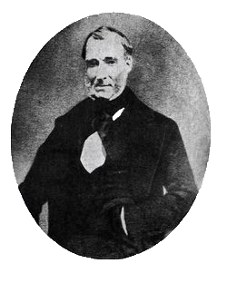

while digging a well in Eagle, Wisconsin, Charles Wood found the transparent, wine-yellow pebble which he gifted to his wife Clarissa.
The “pebble” spent the seven years among curios and shells on the Woods’ coffee table before Clarissa took it to a jeweler, who told her it was likely topaz and offered her $1 for it. Clarissa accepted, though after it was appraised as a 16-carat diamond, she unsuccessfully sued the jeweler for the stone’s return.